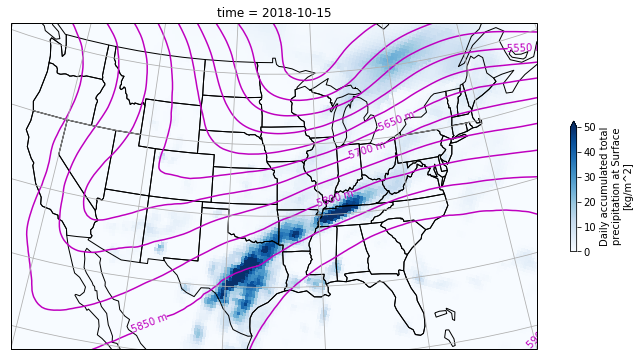
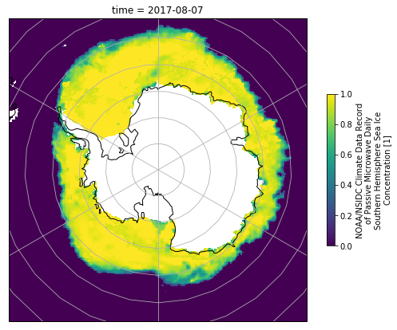
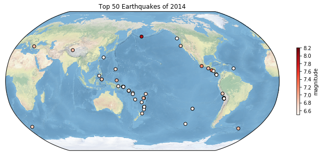

Assignment: Making Maps with Cartopy
Contents
Assignment: Making Maps with Cartopy#
1) Plot data from NARR#
NARR is NCEP’s North American Regional Reanalysis, a widely used product for studying the weather and climate of the continental US. The data is available from NOAA’s Earth System Research Laboratory via OPeNDAP, meaing that xarray can open the data “remotely” without downloading a file.
For this problem, you should open this geopential height file:
https://www.esrl.noaa.gov/psd/thredds/dodsC/Datasets/NARR/Dailies/pressure/hgt.201810.nc
And this precipitation file:
https://www.esrl.noaa.gov/psd/thredds/dodsC/Datasets/NARR/Dailies/monolevel/apcp.2018.nc
Your goal is to make a map that looks like the one below. It shows total precipitation on Oct. 15, 2018 in blue, plus contours of the 500 mb geopotential surface.
Hint: examine the dataset variables and attirbutes carefully in order to determine the projection of the data.

2) Antarctic Sea Ice#
Download this file and then use it to plot the concentration of Antarctic Sea Ice on Aug. 7, 2017. Again, you will need to explore the file contents in order to determine the correct projection.
import xarray as xr
import pooch
url = 'https://polarwatch.noaa.gov/erddap/files/nsidcCDRiceSQsh1day/2017/seaice_conc_daily_sh_f17_20170807_v03r01.nc'
fname = pooch.retrieve(url, known_hash='19b74e7e97f1c0786da0c674c4d5e4af0da5b32e2fe8c66a8f1a8a9a1241e73c')
ds_ice = xr.open_dataset(fname, drop_variables='melt_onset_day_seaice_conc_cdr')

3) Global USGS Earthquakes#
Reload the file we explored in homework 5 using pandas
http://www.ldeo.columbia.edu/~rpa/usgs_earthquakes_2014.csv
and use the data to recreate this map.
